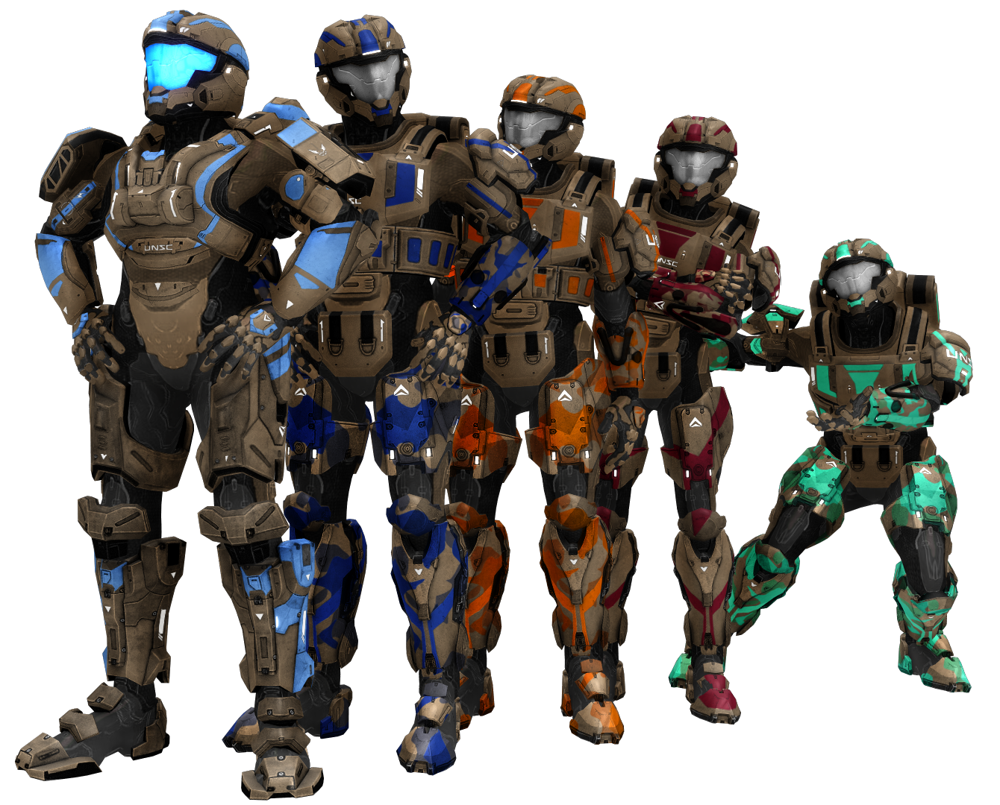

The Chorus Trilogy takes place when a ship transporting the Reds and Blues home crashes on a planet named Chorus. Thinking that they are the only ones on the planet, they learn that they landed in the middle of a civil war between The Federal Army of Chorus and The New Republic. However, two mercenaries on the planet changes everything that's happening on the isolated planet when the Reds and Blues learn that they want to kill everyone on the planet.
New Republic
- Kimball - Leader of the New Republic with ice trim
- Smith - Blue trim, he will listen to Caboose with passion, even giving him a grenade
- Bitters - Orange trim, he's lazy like Grif and one time ate a REALLY old dessert cake
- Jensen - Maroon trim, smart and clumsy. Doesn't know how to drive a Warthog
- Palomo - Cyan trim, little like Tucker, but less intelligent

Federal Army (Feds) and Mercs
- Doyle - Leader of the Federal Army in gold trim
- Grey - Purple trim, a smart, yet mad, doctor for the Feds
- Felix - Steel with orange trim, used to work for the New Republic before he showed his true colors
- Locus - Steel with sage trim, he thinks of himself as a soldier, but Wash makes him think about who he really is
- Hargrove - He is the mind behind the genocide attempt on Chorus and once knew the Director of Project Freelancer